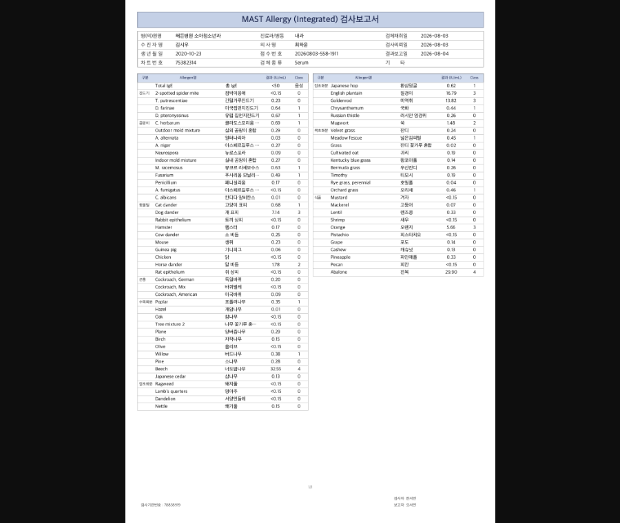
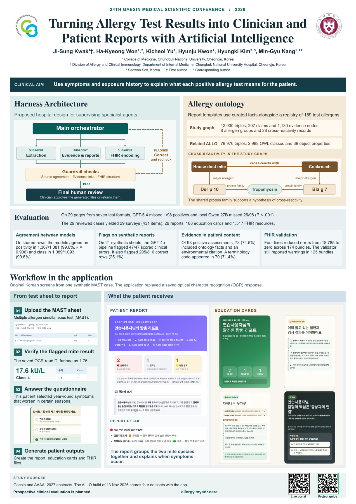

알레르기 임상정보학 연구
알레르기 검사표를
환자의 말로 풀다
앱이 검사표의 글자와 수치를 읽고, 환자는 증상과 노출 경험을 답합니다. 의료진이 검토한 기록으로 환자 안내서, 교육 카드와 표준 의료정보 파일(FHIR)을 만듭니다.
과정 영상
검사표 한 장이 결과지가 되기까지
합성 검사표에서 숫자를 대조하고, 증상 문진을 거쳐 환자 자료와 FHIR 기록을 만드는 과정을 따라갑니다.
영상 대본 읽기
- 합성 MAST 검사표입니다. 이 사례에는 항원 69개가 들어 있습니다.
- OCR 원문에서 개 표피 값은 714로 읽혔습니다. 원본의 값은 7.14 IU/mL, 3등급입니다.
- 가상의 응답자는 개와 접촉한 뒤 증상이 심해지지만, 오렌지를 먹고 난 뒤에는 증상이 없었다고 답했습니다.
- 개 표피와 오렌지는 모두 3등급입니다. 환자 안내문은 각 노출 후의 증상을 검사값과 함께 설명합니다.
- 공개 합성 사례에서 실제 생성된 한국어 카드뉴스입니다. 총 14장 중 요약, 증상 연관성, 개 표피 카드를 보여줍니다.
- 이 FHIR R4 번들에는 환자 1개, 검사 항목 69개, 검사 보고서 1개가 들어 있습니다.
- The synthetic MAST report contains 69 allergens.
- The OCR output reads 714 for dog dander. Checking the original row shows 7.14 IU/mL, class 3.
- The simulated patient reports worse symptoms after dog contact and no symptoms after eating orange.
- Dog dander and orange are both class 3. The patient guidance explains the reported symptoms alongside each value.
- These three original Korean cards are part of the 14-card deck generated for this synthetic case.
- The FHIR R4 bundle links one Patient, 69 Observations and one DiagnosticReport, for a total of 71 resources.
공개 합성 사례
같은 검사에서 나온 여섯 자료
검사값은 어떤 증상과 노출 경험으로 이어질까요? 한 가상 환자의 검사표와 문진에서 두 항목을 나란히 읽어 보세요.
| 항원 | 검사값 | 노출 후 증상 · 합성 응답 |
|---|---|---|
| 개 표피 | 7.14 IU/mL | 개와 접촉한 뒤 증상이 심해짐 |
| 오렌지 | 5.66 IU/mL | 먹은 뒤 증상이 없었음 |


연구 결과
무엇을 확인했나
7가지 양식의 검사 결과지 29페이지를 기준 전사와 대조했습니다. 연구용 평가 표본과 위의 공개 합성 사례는 별개입니다.
1 / 98
GPT-5.4가 놓친 양성 항목
같은 양성 98건에서 로컬 Qwen 27B는 26건을 놓쳤습니다. 짝지은 비교에서 P < .001이었습니다.
188장
29개 사례에서 생성한 교육 카드
환자 결과지 29건, 문진 문항 431개, FHIR 리소스 1,517개를 함께 생성했습니다.
174개
FHIR 번들 검증
네 가지 오류 유형을 수정한 뒤 공식 검증기에서 오류가 0건이었습니다. 125개 번들에는 경고가 남았습니다.
검사값과 설명의 근거를 어떻게 확인하나요?
앱은 두 판독 결과가 다르면 해당 행을 표시합니다. 검토자는 원본 이미지에서 항원명, 수치, 등급을 대조합니다.
알레르기 온톨로지는 항원, 단백질 성분과 교차반응에 관한 근거를 연결합니다. 예를 들어 집먼지진드기의 Der p 10과 바퀴의 Bla g 7은 그래프에서 같은 단백질 계열에 속합니다. 의료진은 이 정보와 환자가 답한 증상·노출 이력을 함께 확인합니다.
평가 범위와 병원 적용 계획
별도의 합성 결과지 21장에 대한 6개 모델의 양성 누락률은 0.5–28.0%였습니다. 환자 이해도와 만족도는 전향적 평가 과제입니다.
병원 적용은 협의 단계입니다. 계획에는 성인 환자 또는 소아 보호자의 연구 동의, 병원정보시스템과 연계한 알림톡 문진, 의료진의 최종 승인, 결과 전달 후 별도 만족도 조사가 포함됩니다.


제34회 개신의학학술대회
학회 포스터
Turning Allergy Test Results into Clinician and Patient Reports with Artificial Intelligence
영문 A2 포스터에 연구 설계와 평가 결과, 한국어 앱에서 생성한 카드뉴스 원본을 담았습니다.